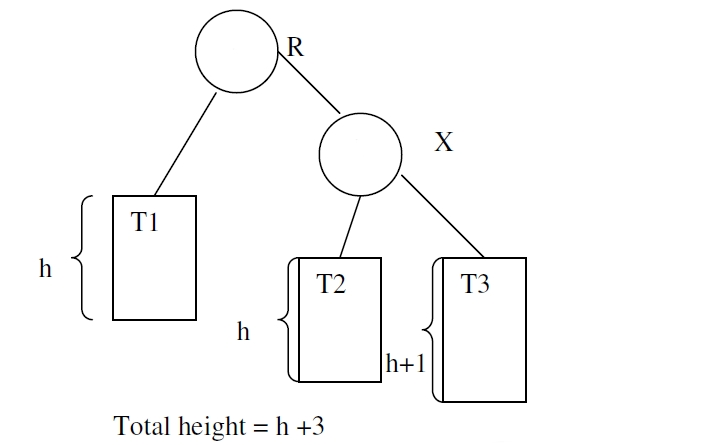
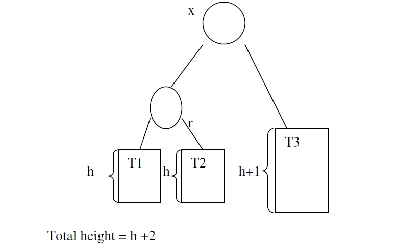
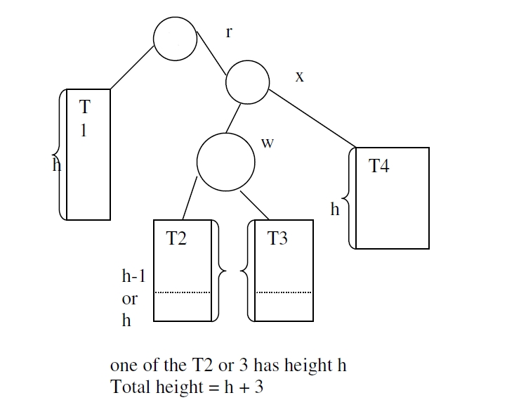

AVL Tree
An AVL (Adelson-Velskii and Landis) tree is a binary search tree in which the height of the left and right subtree of the root differ by at most 1 and in which the left and right subtrees are again AVL trees. With each node of an AVL tree is associated with a balancing factor,
BalanceFactor(T) of a node T= height(T.left) - height(T.right)
The balancing factor of every node should be 1 or 0 or -1.
Adding or removing a node from an AVL tree may make many nodes violate the AVL balance condition, but each violation of AVL balance can be restored by rotations.
Let r be the root of the tree and x be the root of its right subtree.
Case 1: right High


Item x is right high. The action needed in this case is called a left
rotation; we have rotated the node x upward to the root, dropping r down
into the left subtree of x; the subtree T2 of nodes with keys between those
of r and x now becomes the right subtree of r rather than the left subtree of
x.
Case 2: left high: it is mirror image of right high,carried out similar to right high case
Case 3:double rotation

In this case it is necessary to move 2 levels to the node w that roots the left
subtree of x , to find the new root. This process is known as double rotation
because the transformation can be obtained in 2 steps by 1st rotating the subtree
within root x to the right (so that w becomes the root) and then rotating the tree
with root r to the left (moving w up do becomes the new root).The new balance factors for r and x depends on the previous balance factor from
w.